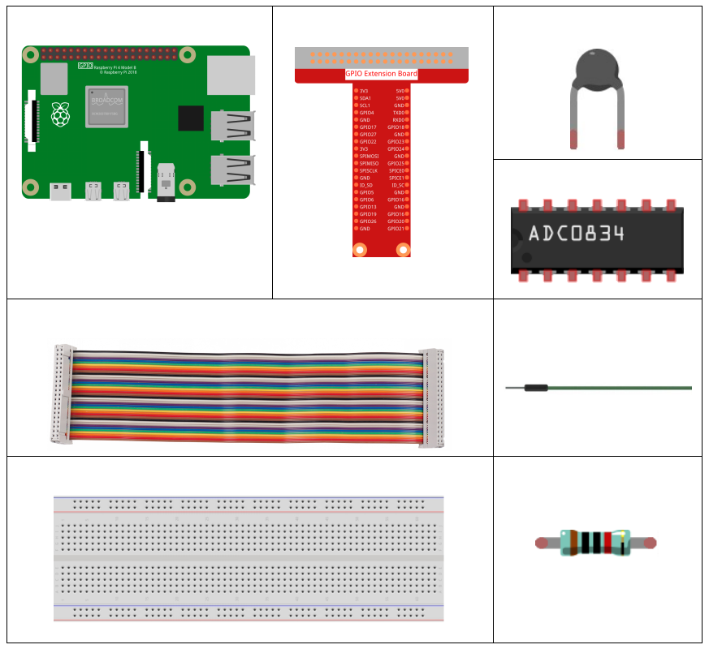
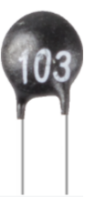

Note
Hello, welcome to the SunFounder Raspberry Pi & Arduino & ESP32 Enthusiasts Community on Facebook! Dive deeper into Raspberry Pi, Arduino, and ESP32 with fellow enthusiasts.
Why Join?
Expert Support: Solve post-sale issues and technical challenges with help from our community and team.
Learn & Share: Exchange tips and tutorials to enhance your skills.
Exclusive Previews: Get early access to new product announcements and sneak peeks.
Special Discounts: Enjoy exclusive discounts on our newest products.
Festive Promotions and Giveaways: Take part in giveaways and holiday promotions.
👉 Ready to explore and create with us? Click [here] and join today!
2.2.2 Thermistor
Introduction
Just like photoresistor can sense light, thermistor is a temperature sensitive electronic device that can be used for realizing functions of temperature control, such as making a heat alarm.
Components
Principle
A thermistor is a thermally sensitive resistor that exhibits a precise and predictable change in resistance proportional to small changes in temperature. How much its resistance will change is dependent upon its unique composition. Thermistors are the parts of a larger group of passive components. And unlike their active component counterparts, passive devices are incapable of providing power gain, or amplification to a circuit.
Thermistor is a sensitive element, and it has two types: Negative Temperature Coefficient (NTC) and Positive Temperature Coefficient (PTC), also known as NTC and PTC. Its resistance varies significantly with temperature. The resistance of PTC thermistor increases with temperature ,while the condition of NTC is opposite to the former In this experiment we use NTC.
The principle is that the resistance of the NTC thermistor changes with the temperature of the outer environment. It detects the real-time temperature of the environment. When the temperature gets higher, the resistance of the thermistor decreases. Then the voltage data is converted to digital quantities by the A/D adapter. The temperature in Celsius or Fahrenheit is output via programming.
In this experiment, a thermistor and a 10k pull-up resistor are used. Each thermistor has a normal resistance. Here it is 10k ohm, which is measured under 25 degree Celsius.
Here is the relation between the resistance and temperature:
RT =RN expB(1/TK – 1/TN)
RT is the resistance of the NTC thermistor when the temperature is TK.
RN is the resistance of the NTC thermistor under the rated temperature TN. Here, the numerical value of RN is 10k.
TK is a Kelvin temperature and the unit is K. Here, the numerical value of TKis 273.15 + degree Celsius.
TN is a rated Kelvin temperature; the unit is K too. Here, the numerical value of TN is 273.15+25.
And B(beta), the material constant of NTC thermistor, is also called heat sensitivity index with a numerical value 3950.
exp is the abbreviation of exponential, and the base number e is a natural number and equals 2.7 approximately.
Convert this formula TK=1/(ln(RT/RN)/B+1/TN) to get Kelvin temperature that minus 273.15 equals degree Celsius.
This relation is an empirical formula. It is accurate only when the temperature and resistance are within the effective range.
Schematic Diagram


Experimental Procedures
Step 1: Build the circuit.

For C Language Users
Step 2: Go to the folder of the code.
cd ~/davinci-kit-for-raspberry-pi/c/2.2.2/
Step 3: Compile the code.
gcc 2.2.2_Thermistor.c -lwiringPi -lm
Note
-lm is to load the library math. Do not omit, or you will make an error.
Step 4: Run the executable file.
sudo ./a.out
With the code run, the thermistor detects ambient temperature which will be printed on the screen once it finishes the program calculation.
Note
If it does not work after running, or there is an error prompt: "wiringPi.h: No such file or directory", please refer to C code is not working?.
Code
#include <wiringPi.h>
#include <stdio.h>
#include <math.h>
typedef unsigned char uchar;
typedef unsigned int uint;
#define ADC_CS 0
#define ADC_CLK 1
#define ADC_DIO 2
uchar get_ADC_Result(uint channel)
{
uchar i;
uchar dat1=0, dat2=0;
int sel = channel > 1 & 1;
int odd = channel & 1;
digitalWrite(ADC_CLK, 1);
delayMicroseconds(2);
digitalWrite(ADC_CLK, 0);
delayMicroseconds(2);
pinMode(ADC_DIO, OUTPUT);
digitalWrite(ADC_CS, 0);
// Start bit
digitalWrite(ADC_CLK,0);
digitalWrite(ADC_DIO,1); delayMicroseconds(2);
digitalWrite(ADC_CLK,1); delayMicroseconds(2);
//Single End mode
digitalWrite(ADC_CLK,0);
digitalWrite(ADC_DIO,1); delayMicroseconds(2);
digitalWrite(ADC_CLK,1); delayMicroseconds(2);
// ODD
digitalWrite(ADC_CLK,0);
digitalWrite(ADC_DIO,odd); delayMicroseconds(2);
digitalWrite(ADC_CLK,1); delayMicroseconds(2);
//Select
digitalWrite(ADC_CLK,0);
digitalWrite(ADC_DIO,sel); delayMicroseconds(2);
digitalWrite(ADC_CLK,1);
digitalWrite(ADC_DIO,1); delayMicroseconds(2);
digitalWrite(ADC_CLK,0);
digitalWrite(ADC_DIO,1); delayMicroseconds(2);
for(i=0;i<8;i++)
{
digitalWrite(ADC_CLK,1); delayMicroseconds(2);
digitalWrite(ADC_CLK,0); delayMicroseconds(2);
pinMode(ADC_DIO, INPUT);
dat1=dat1<<1 | digitalRead(ADC_DIO);
}
for(i=0;i<8;i++)
{
dat2 = dat2 | ((uchar)(digitalRead(ADC_DIO))<<i);
digitalWrite(ADC_CLK,1); delayMicroseconds(2);
digitalWrite(ADC_CLK,0); delayMicroseconds(2);
}
digitalWrite(ADC_CS,1);
pinMode(ADC_DIO, OUTPUT);
return(dat1==dat2) ? dat1 : 0;
}
int main(void)
{
unsigned char analogVal;
double Vr, Rt, temp, cel, Fah;
if(wiringPiSetup() == -1){ //when initialize wiring failed,print messageto screen
printf("setup wiringPi failed !");
return 1;
}
pinMode(ADC_CS, OUTPUT);
pinMode(ADC_CLK, OUTPUT);
while(1){
analogVal = get_ADC_Result(0);
Vr = 5 * (double)(analogVal) / 255;
Rt = 10000 * (double)(Vr) / (5 - (double)(Vr));
temp = 1 / (((log(Rt/10000)) / 3950)+(1 / (273.15 + 25)));
cel = temp - 273.15;
Fah = cel * 1.8 +32;
printf("Celsius: %.2f C Fahrenheit: %.2f F\n", cel, Fah);
delay(100);
}
return 0;
}
Code Explanation
#include <math.h>
There is a C numerics library which declares a set of functions to compute common mathematical operations and transformations.
analogVal = get_ADC_Result(0);
This function is used to read the value of the thermistor.
Vr = 5 * (double)(analogVal) / 255;
Rt = 10000 * (double)(Vr) / (5 - (double)(Vr));
temp = 1 / (((log(Rt/10000)) / 3950)+(1 / (273.15 + 25)));
cel = temp - 273.15;
Fah = cel * 1.8 +32;
printf("Celsius: %.2f C Fahrenheit: %.2f F\n", cel, Fah);
These calculations convert the thermistor values into Celsius values.
Vr = 5 * (double)(analogVal) / 255;
Rt = 10000 * (double)(Vr) / (5 - (double)(Vr));
These two lines of codes are calculating the voltage distribution with the read value analog so as to get Rt (resistance of thermistor).
temp = 1 / (((log(Rt/10000)) / 3950)+(1 / (273.15 + 25)));
This code refers to plugging Rt into the formula TK=1/(ln(RT/RN)/B+1/TN) to get Kelvin temperature.
temp = temp - 273.15;
Convert Kelvin temperature into degree Celsius.
Fah = cel * 1.8 +32;
Convert degree Celsius into Fahrenheit.
printf("Celsius: %.2f C Fahrenheit: %.2f F\n", cel, Fah);
Print centigrade degree, Fahrenheit degree and their units on the display.
For Python Language Users
Step 2: Go to the folder of the code.
cd ~/davinci-kit-for-raspberry-pi/python/
Step 3: Run the executable file
sudo python3 2.2.2_Thermistor.py
With the code run, the thermistor detects ambient temperature which will be printed on the screen once it finishes the program calculation.
Code
Note
You can Modify/Reset/Copy/Run/Stop the code below. But before that, you need to go to source code path like davinci-kit-for-raspberry-pi/python.
import RPi.GPIO as GPIO
import ADC0834
import time
import math
def init():
ADC0834.setup()
def loop():
while True:
analogVal = ADC0834.getResult()
Vr = 5 * float(analogVal) / 255
Rt = 10000 * Vr / (5 - Vr)
temp = 1/(((math.log(Rt / 10000)) / 3950) + (1 / (273.15+25)))
Cel = temp - 273.15
Fah = Cel * 1.8 + 32
print ('Celsius: %.2f C Fahrenheit: %.2f F' % (Cel, Fah))
time.sleep(0.2)
if __name__ == '__main__':
init()
try:
loop()
except KeyboardInterrupt:
ADC0834.destroy()
Code Explanation
import math
There is a numerics library which declares a set of functions to compute common mathematical operations and transformations.
analogVal = ADC0834.getResult()
This function is used to read the value of the thermistor.
Vr = 5 * float(analogVal) / 255
Rt = 10000 * Vr / (5 - Vr)
temp = 1/(((math.log(Rt / 10000)) / 3950) + (1 / (273.15+25)))
Cel = temp - 273.15
Fah = Cel * 1.8 + 32
print ('Celsius: %.2f °C Fahrenheit: %.2f ℉' % (Cel, Fah))
These calculations convert the thermistor values into centigrade degree and Fahrenheit degree.
Vr = 5 * float(analogVal) / 255
Rt = 10000 * Vr / (5 - Vr)
These two lines of codes are calculating the voltage distribution with the read value analog so as to get Rt (resistance of thermistor).
temp = 1/(((math.log(Rt / 10000)) / 3950) + (1 / (273.15+25)))
This code refers to plugging Rt into the formula TK=1/(ln(RT/RN)/B+1/TN) to get Kelvin temperature.
temp = temp - 273.15
Convert Kelvin temperature into centigrade degree.
Fah = Cel * 1.8 + 32
Convert the centigrade degree into Fahrenheit degree.
print ('Celsius: %.2f °C Fahrenheit: %.2f ℉' % (Cel, Fah))
Print centigrade degree, Fahrenheit degree and their units on the display.